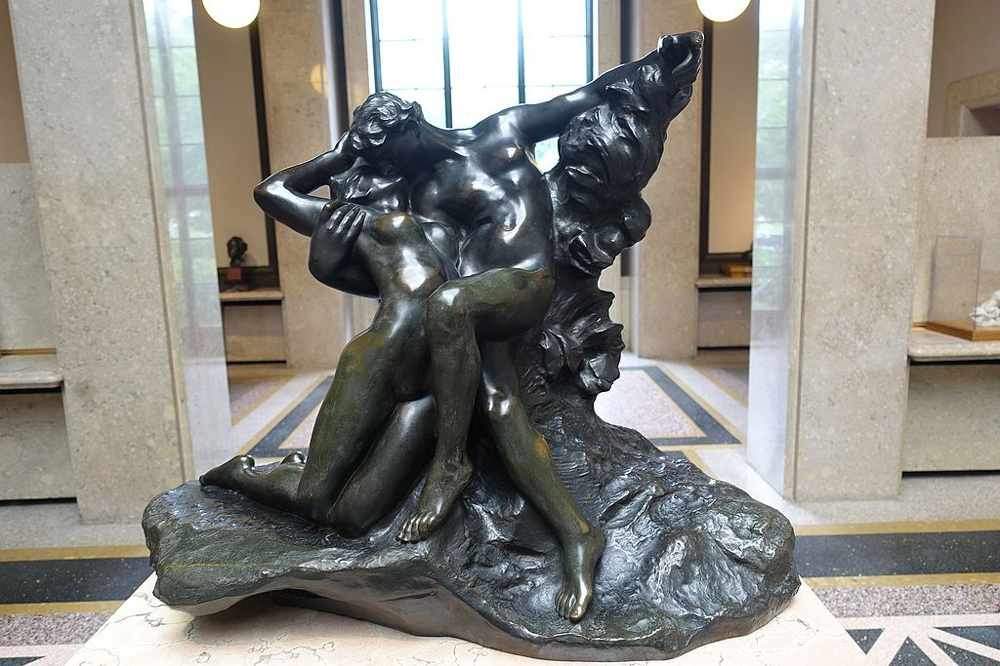

<head>
<meta charset="UTF-8" />
<meta name="keywords" content="drawing, painting" />
<meta name="description" content="drawings by Sunjy" />
<title>Sunjy</title>
<link rel="shortcut icon" type="image/x-icon" href="../../mImages/mCommon/favicon.ico" media="screen" />
<link rel="stylesheet" type="text/css" href="../../mCsses/mCommon/mCssA.css" />
<link rel="stylesheet" type="text/css" href="../../mCsses/mCommon/mCssB.css" />
<link rel="stylesheet" type="text/css" href="../../mCsses/mCommon/mCssC.css" />
<link rel="stylesheet" type="text/css" href="../../mCsses/mCommon/mCssD.css" />
<link rel="stylesheet" type="text/css" href="../../mCsses/mContent/mCssA.css" />
<link rel="stylesheet" type="text/css" href="../../mCsses/mContent/mCssB.css" />
<link rel="stylesheet" type="text/css" href="../../mCsses/mContent/mCssC.css" />
<link rel="stylesheet" type="text/css" href="../../mCsses/mContent/mCssD.css" />
</head>
<script type="text/javascript" src="../../mScripts/mContent/mContentAA.js" /></script>
<script type="text/javascript" src="../../mScripts/mContent/mContentAB.js" /></script>
<script type="text/javascript" src="../../mScripts/mContent/mContentAC.js" /></script>
<script type="text/javascript" src="../../mScripts/mContent/mContentAD.js" /></script>
<script type="text/javascript"></script> 
<script type="text/javascript">
document.write('<div class="mImgAbsolute"></div>');
/*
document.write('<p class="mFontSizeBColor" />From a white paper...</p>');
document.write('<table class="center"><tr><td>');
document.write('');
document.write('</td></tr></table>');
*/
</script>


<script type="text/javascript">
document.write('<p class="mFontSizeBColor" />Eternal Springtime</p>');
document.write('<p class="mFontSizeSColor" />“Eternal Springtime” by Auguste Rodin was modeled in clay during the same period as “The Kiss” in 1884. This sculpture depicts a pair of lovers caught in a floating embrace.<br><br>Their outstretched and graceful limbs are in sharp contrast to the compact, inward-focused sculpture of “The Kiss.”<br><br>This sculpture has an air of weightless and floating quality, which makes it a perfect ode to springtime love. Rodin created Eternal Springtime at a time when he was in a romantic relationship with Camille Claudel.<br><br>It is claimed that traces of Camille can be discerned in the women of this masterpiece and other female figures prominent in the works Rodin created in the mid-1880s. This work was reproduced several times in bronze and marble.<br></p>');
document.write('<table class="center" /><tr><td>');
document.write('<br>Their outstretched and graceful limbs are in sharp contrast to the compact, inward-focused sculpture of “The Kiss.”<br><br>This sculpture has an air of weightless and floating quality, which makes it a perfect ode to springtime love. Rodin created Eternal Springtime at a time when he was in a romantic relationship with Camille Claudel.<br><br>It is claimed that traces of Camille can be discerned in the women of this masterpiece and other female figures prominent in the works Rodin created in the mid-1880s. This work was reproduced several times in bronze and marble.<br>" />');
document.write('</td></tr></table>');
</script>


